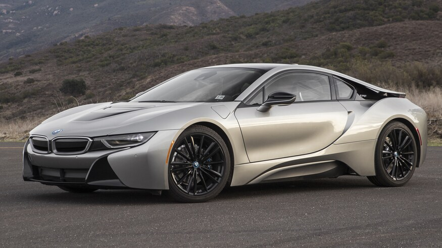

Horses are trained and ridden for practical working purposes, such as in police work or for controlling herd animals on a ranch. They are also used in competitive sports including dressage, endurance riding, eventing, reining, show jumping, tent pegging, vaulting, polo, horse racing, driving, and rodeo (see additional equestrian sports listed later in this article for more examples). Some popular forms of competition are grouped together at horse shows where horses perform in a wide variety of disciplines. Horses (and other equids such as mules) are used for non-competitive recreational riding such as fox hunting, trail riding, or hacking. There is public access to horse trails in almost every part of the world; many parks, ranches, and public stables offer both guided and independent riding. Horses are also used for therapeutic purposes both in specialized para-equestrian competition as well as non-competitive riding to improve human health and emotional development. Horses are also driven in harness racing, at horse shows, and in other types of exhibition such as historical reenactment or ceremony, often pulling carriages. In some parts of the world, they are still used for practical purposes such as farming.[4] Horses continue to be used in public service, in traditional ceremonies (parades, funerals), police and volunteer mounted patrols and for mounted search and rescue. Riding halls enable the training of horse and rider in all weathers as well as indoor competition riding
For centuries the horse has been vital; it was not only our sole form of transportation, but also a working animal on farms, in mines, and on the battlefield. Nowadays, the horse is largely used for leisure, and riding is now included in the top five most popular sports, with stables and riding schools proliferating. Selective breeding has made the modern horse a supreme athlete, capable of incredible stamina and agility, and more and more people have become interested in competing at a high level in all equestrian disciplines. The horse breeds of the world have developed over hundreds of years. Horses have been bred to display certain characteristics, both physically and mentally. From the tiny Shetland pony to the Thoroughbred, there is now so much a horse can be used for, whether it be a pony used as a child’s pet or a racehorse capable of an extremely fast gallop. Few people would deny the beauty, grace, and magnificence of the horse. Those who are lucky enough to have horses in their lives will be enchanted by their gratitude, willingness, loyalty, and friendship. It is widely understood too, that a bad or ungenerous horse is always the result of lack of human empathy or knowledge. For this reason it is vital for all horse owners to treat horses with care, respect, and understanding. This book is a treasury of the most important horse breeds of the world. It is illustrated with superb, carefully researched photographs, to provide the reader with a wonderful insight into the world of horses
The McLaren P1 is a limited-production mid-engine plug-in hybrid sports car produced by British automobile manufacturer McLaren Automotive. Debuted at the 2012 Paris Motor Show,[5] sales of the P1 began in the United Kingdom in October 2013 and all 375 units were sold out by November.[6][7] Production ended in early December 2015.[8] The United States accounted for 34% of the units and Europe for 26%.[8] It is considered by the automotive press to be the successor to the McLaren F1, utilising hybrid power and Formula One technology, but does not have the same three-seat layout. It was later confirmed that the Speedtail served as the actual successor to the McLaren F1.The P1 has a mid-engine, rear wheel drive design that used a carbon fibre monocoque and roof structure safety cage concept called MonoCage, which is a development of the MonoCell first used in the MP4-12C and then in subsequent models. Its main competitors are the LaFerrari and the 918 Spyder. They are all similar in specifications and performance, and in a race around Silverstone circuit they were all within half a second of each other, the P1 finishing first at 58.24 seconds and the LaFerrari finishing last at 58.58 seconds; the 918 was in-between with 58.46 seconds.[9] Parts of the car were inspired by a sailfish that Frank Stephenson saw when on holiday in Miami.[10] 58 units of the track-oriented P1 GTR[11] and 5 units of its road legal counterpart, the P1 LM were produced after the initial run of 375 cars. 13 experimental Prototype 'XP', 5 Validation Prototypes 'VP'[12] and 3 Pre-Production 'PP' cars were produced by McLaren before the production of the P1 started,[13] a number of which have been refurbished, modified and sold to customers.[14]
The BMW i8 was a plug-in hybrid sports car developed by BMW. The i8 was part of BMW's electrified fleet and was marketed under the BMW i sub-brand. The production version of the BMW i8 was unveiled at the 2013 Frankfurt Motor Show and was released in Germany in June 2014.[10] Deliveries to retail customers in the U.S. began in August 2014.[11] A roadster variant was launched in May 2018.[12] Production ended in June 2020.[13] The 2015 BMW i8 accelerated from 0 to 100 km/h (62 mph) in 4.4 seconds[14][15] and had an electronically limited top speed of 250 km/h (155 mph).[5] The 2015 model year i8 had a 7.1-kWh lithium-ion battery pack that delivered an all-electric range of 37 km (23 mi) under the New European Driving Cycle. Under the U.S. EPA cycle, the range in EV mode was 24 km (15 mi).[7] The battery capacity of both the BMW i8 Roadster and the i8 Coupe was increased to 11.6 kWh in 2018, allowing the NEDC electric range to rise to 55 km (34 mi) for the coupé and 53 km (33 mi) for the roadster.[16] The BMW i8 coupé had a fuel efficiency of 2.1 L/100 km (134.5 mpg‑imp; 112.0 mpg‑US) under the NEDC test with carbon emissions of 49 g/km. The EPA rated the i8 combined fuel economy at 76 MPGe (3.1 L gasoline-equivalent/100 km; 91 mpg-imp gasoline-equivalent) and 29 miles per gallon (6.7L/100 km) when running in pure gasoline mode.[7] By March 2020, global sales of all variants had reached more than 20,000 units, making the BMW i8 the world's top-selling plug-in electric sports car, and exceeding sales of all competitors in its segment combined.[16]
The Koenigsegg Jesko is a limited production mid-engine sports car produced by Swedish automobile manufacturer Koenigsegg. Introduced at the 2019 Geneva Motor Show, the car succeeds the Agera. The name Jesko is a tribute to the company founder's father, Jesko von Koenigsegg.[3] The automobile is named after Jesko von Koenigsegg, the father of Christian von Koenigsegg The Jesko is primarily built as a high-performance track car, with focus on high aerodynamic downforce and more precise handling. Koenigsegg's other current production model, the Regera, is designed as a grand touring-oriented offering.

An overview: HTML provides the basic structure of sites, which is enhanced and modified by other technologies like CSS and JavaScript. CSS is used to control presentation, formatting, and layout. JavaScript is used to control the behavior of different elements.
Unknown(and if i knew something would happen.)
classified(and if you knew something would happen.)